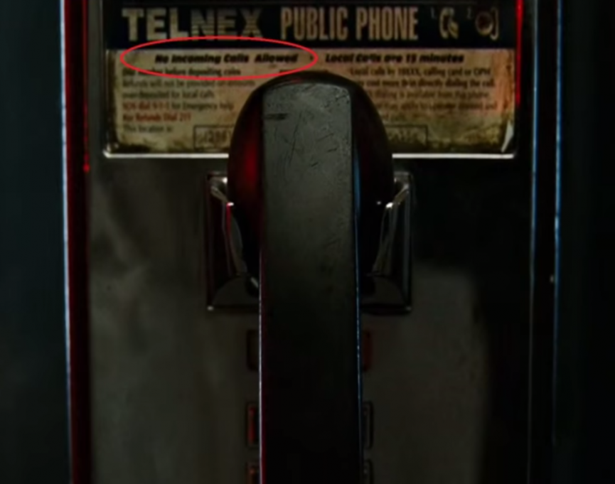

I think all of us have seen Fight Club or at least heared about it.
In my opinion it's one of the best films, with one of the best cast. From beggining this masterpiece wasn't very popular, but currently billions of people have seen and enjoyed it.
The truth is, in film, there are many details that only few people have caught.
1
Did you know, whenever main character recieves question like: "who are you?" or something, he never says his name. That's funny that most of people, have been watching 2 hours and still didn't realize, that they didn't know main character's name. Somehow they managed it to be flashy.
2
In film, there is the moment, when narrator calls Tyler Durden, but he hangs up and then call back. You may ask why did screenwriter did that. The answer is that, in Fight Club there are many hidden things and this is one of them.
So, when phone appears on the screen, you can see the text on it. That text says: No Incoming Calls Allowed.That means, no one can call you back on that phone. So, it turns out that "no one" called narrator and that means the Tyler Durden he knows, isn't real and it's illusion.
